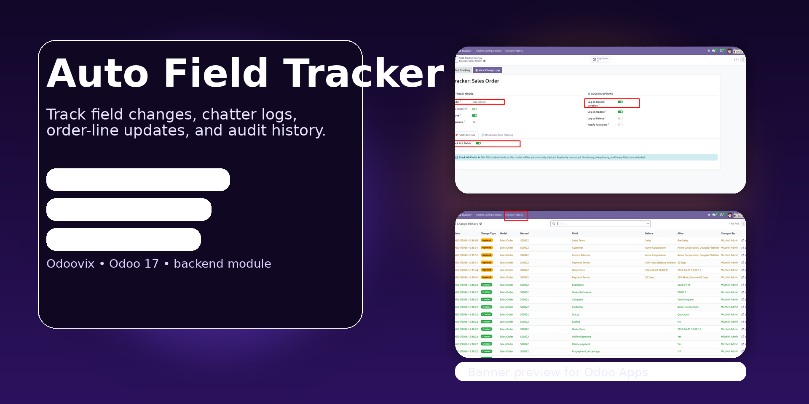

Auto Field Tracker
Track create, update, delete, and One2many field changes without code. Build a clean audit trail directly in chatter and review everything from searchable logs.

Why Use Auto Field Tracker?
A practical audit solution for Odoo teams that need visibility into record changes without custom development on every model.
Track create, update, and delete
Capture the full lifecycle of tracked records directly in the record conversation.
Chatter-based audit trail
Show old and new values where users already work, instead of hiding them in technical tables.
Searchable log history
Review tracked events later across configured models from a dedicated audit log view.
One2many line tracking
Preserve line-level changes that often get missed in normal business review flows.
Desktop Preview
A wide desktop-style presentation that works better on Odoo Apps Store than CSS-only animated slides.

Screenshots
Review the main screens used to configure tracking and inspect the resulting audit history.
Record Change Preview
Configuration Screen

Tracking Logs

Follow these steps to enable audit tracking on your selected Odoo models.
Step 1: Install the Module
Add the module to your apps path, update the apps list, and install Auto Field Tracker.
Step 2: Select the Model
Open the tracker configuration and choose the chatter-enabled model you want to monitor.
Step 3: Choose Fields
Track all eligible fields or only the specific fields and line items that matter for your audit process.
Step 4: Review Changes
Changes appear automatically in chatter and can also be reviewed in the searchable tracking log.
Frequently Asked Questions
Common questions about installation, supported models, and tracked events.
What changes can Auto Field Tracker monitor?
It can track create, update, delete, and selected One2many line changes for supported chatter-enabled models.
Do I need to write Python code to enable tracking?
No. The module is designed to be configured from the Odoo interface without custom code for each tracked model.
Where can users review the tracked data?
Users can see tracked changes directly in chatter and browse the dedicated audit log for broader review.
Does it support line-level changes?
Yes. Selected One2many child-line changes can be recorded on the parent record to keep the change story complete.